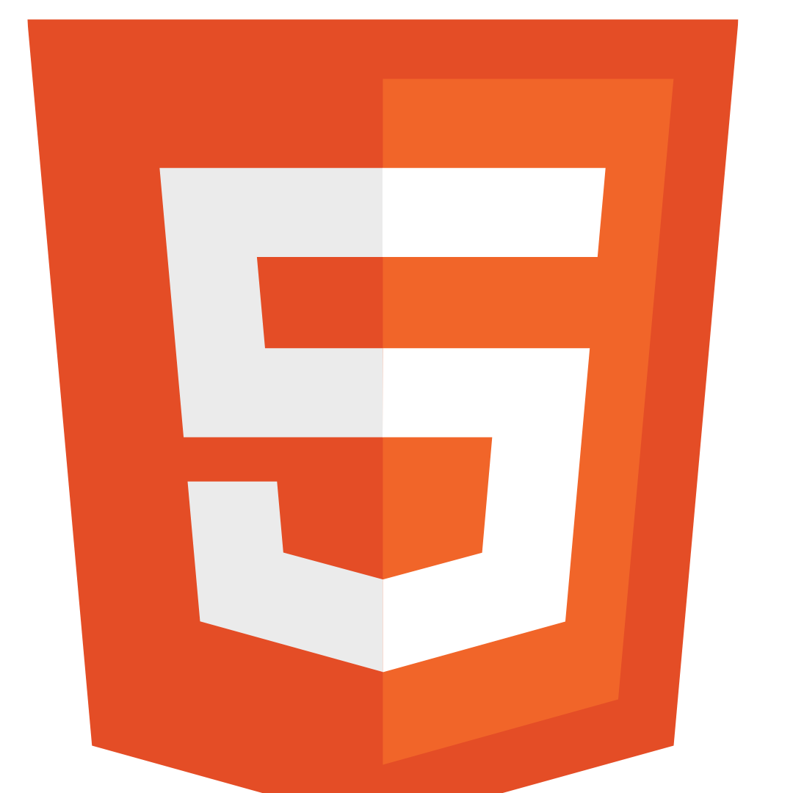
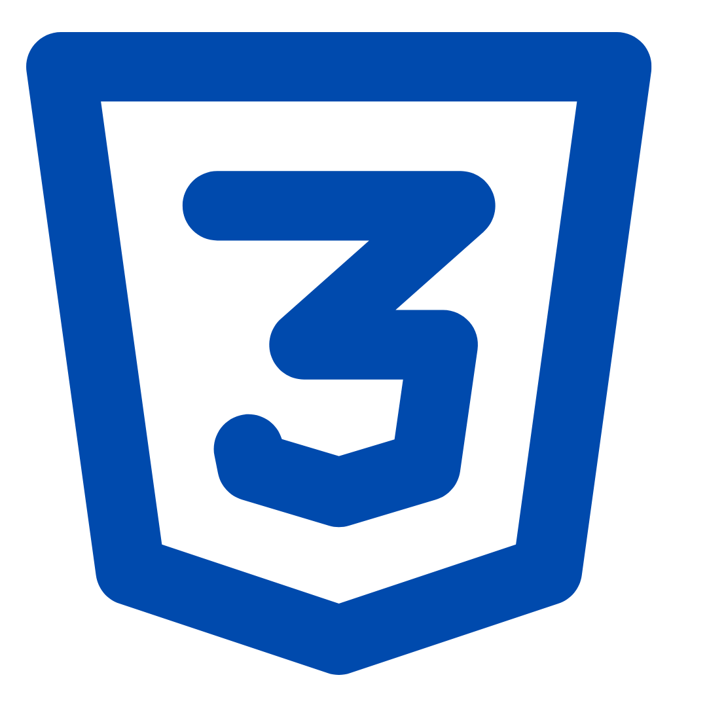

Hi, My Name is Saad Malik
And I am a Passionate
Work Experience

HTML Developer (2021-2022)
I worked as a HTML developer from 2021 to 2022, specializing in building responsive and user-friendly web pages. During this time, I honed my skills in HTML to create seamless web experiences.

CSS Developer (2022-2023)
I worked as a CSS developer from 2022 to 2023, focusing on designing visually appealing and responsive layouts. During this period, I enhanced my expertise in advanced CSS techniques, including Flexbox, Grid, and animations.

Node.js Developer (2023-2024)
I worked as a Node.js developer from 2023 to 2024, building scalable server-side applications and APIs. During this time, I gained expertise in JavaScript, Express.js, and database integration for efficient backend development.

Graphic Designer (2020-2024)
I worked as a Graphic Designer from 2020 to 2024, creating visually compelling designs for digital and print media. During this time, I developed expertise in tools like Adobe Photoshop, Illustrator, and InDesign to deliver creative solutions for various clients.